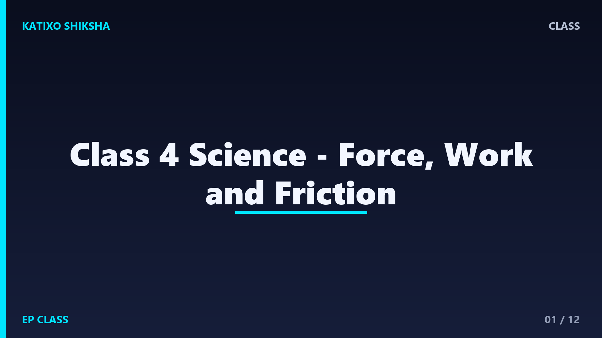
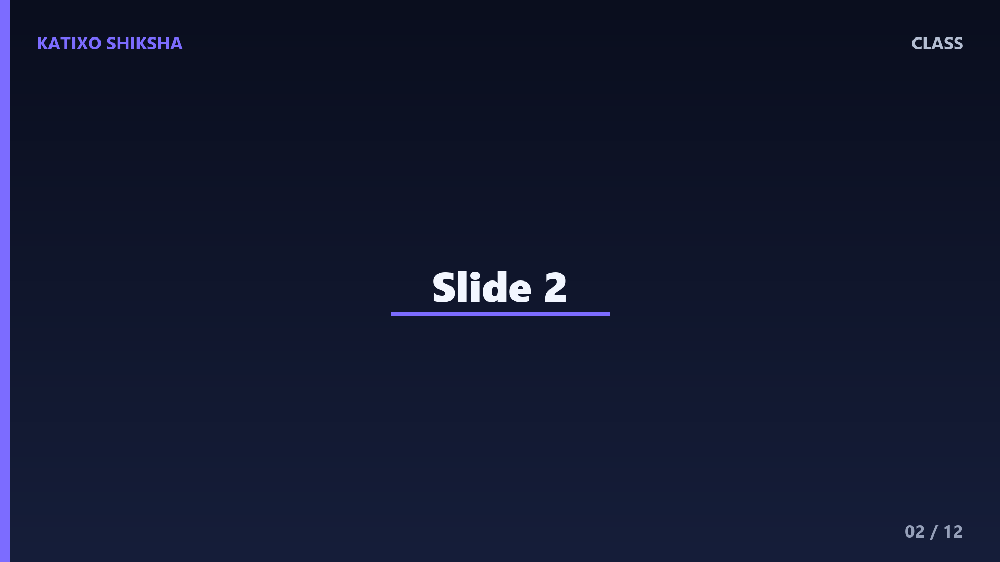

Class 4 Science - Force, Work and Friction

Slide 1A force is a push or a pull. You use force when you push a door, pull a drawer, kick a ball, lift a bag, or press clay. Force is part of almost every movement around us.

Slide 2A push moves something away from you. A pull moves something toward you. Opening a drawer is a pull. Closing a door can be a push. Try finding five push and pull actions at home.

Slide 3An object at rest may start moving when force is applied. A football does not move by itself. When you kick it, your foot applies force and the ball starts moving. This is force in action.

Slide 4Force can also stop motion. A moving bicycle slows down when brakes are applied. Your hand can stop a rolling ball. Stopping also needs force, not only starting or speeding up.

Slide 5Force can change direction. When a bat hits a moving ball, the ball goes in another direction. When you turn a bicycle handle, the bicycle changes direction because force is applied.

Slide 6Force can change shape. You can press clay, stretch a rubber band, or squeeze a sponge. Some objects return to their shape, while some remain changed. This depends on the material.

Slide 7In science, work is done when a force moves an object through some distance. If you push a heavy wall and it does not move, you feel tired, but scientific work is not done on the wall.

Slide 8Simple machines make work easier. A lever, wheel, pulley, ramp, and screw can help us move, lift, or hold things with less effort. They do not remove work, but they make it easier.

Slide 9Friction is a force between touching surfaces. It usually opposes motion. A ball rolling on grass slows down because of friction. A smooth floor may have less friction than a rough road.

Slide 10Friction is useful. It helps us walk without slipping. It helps tyres grip the road. It helps brakes stop a bicycle. It helps us write with a pencil on paper. Without friction, daily life would be difficult.

Slide 11Sometimes we want less friction. Oil or grease can help machine parts move smoothly. Wheels reduce friction when moving heavy objects. Smooth surfaces may also reduce friction. Engineers control friction carefully.

Slide 12Let us revise. What is force? Give one push and one pull example. Name two things force can change. What is friction? Give one useful example of friction. Explain using your own words.